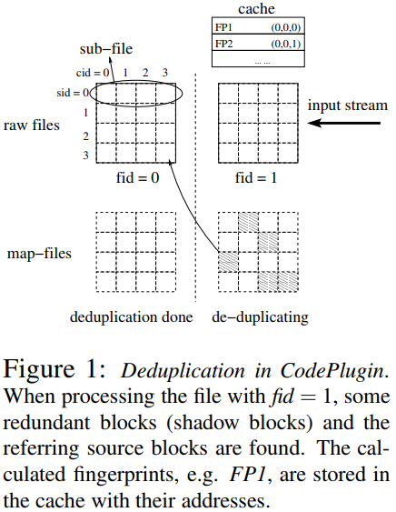
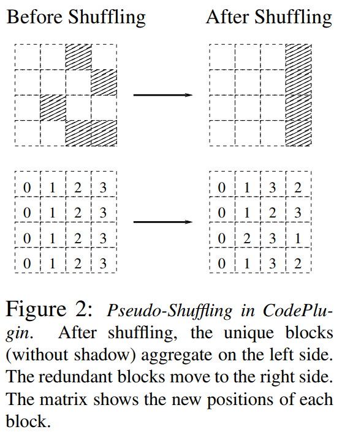

@HotCloud'15 @Deduplication && Erasure Code
CodePlugin: Plugging Deduplication into Reasure Coding for Cloud StorgaeSummaryStrength (Contributions of the paper)Weakness (Limitations of the paper)Future Works
Motivation of this paper: To simplify the implementations of erasure coding schemes. Many system only support file appending operations. This features leads to a non-trivial and increasing portion of redundant data on cloud storage systems. Such redundancy leads to several consequences:
- extra storage has to to be used to acommodate such redundant data.
- extra coding (I/O) cost has to be paid since the redindant data have to be encoded as well.
CodePlugin Main Idea: CodePlugin introduces some pre-processing steps before the normal encoding.
In these pre-processing steps, the data duplications are identified and properly shuffled so that the redundant blocks do not have to be encoded.
- the de-duplicating step that tries to identify the redundant blocks
- the pseudo-shuffling step. which is to virtually re-arrange the positions of data blocks so that encoding is only needed on a subset of blocks.
- the optimal sub-files exchanging step, which can further reduce the number of blocks to be encoded.
When a file is chunked and all fingerprints are generated, after comparing these fingerprints to hte ones in the cache, CodePlugin can tell which blocks are redundant.
After the file is chunked, the blocks are identified via 3-tuple address, which is composed of the corresponding file id (fid), sub-file id (sid) and column id (cid). 

Implementation and Evaluation: Impementation none Evaluation
- encoding throughput
- storage space